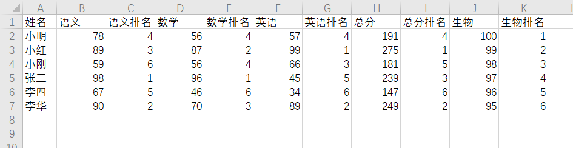
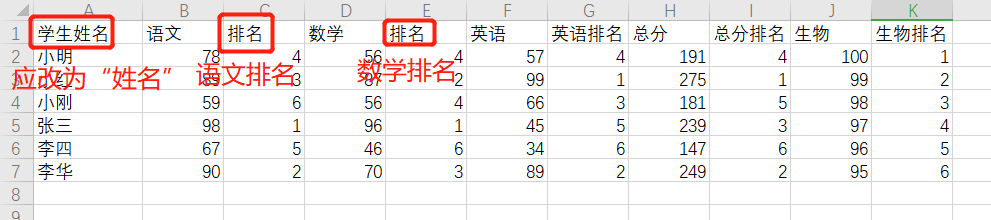

初一科目：语文 数学 英语 生物 地理 历史 道法 体育
初二科目：语文 数学 英语 生物 地理 历史 物理 道法 体育
初三科目：语文 数学 英语 物理 历史 化学 道法 体育
将学生名字那一列修改为“姓名”,考试科目以及该科目的排名修改为"科目名"和“科目名排名”。
例如“语文”和“语文排名”，总分则修改为“总分”，“总分排名”。
能够在成绩单上显示的内容：姓名、科目分数及其排名。
正确：

错误：

点击左上角的按钮上传文档，如果前两步操作正确，则点击上传后网页会预览由表格生成的成绩单。
然后点击导出按钮生成一个包含多张成绩单的文档。若要添加给学生的学习建议，则在生成的文档中直接编辑。